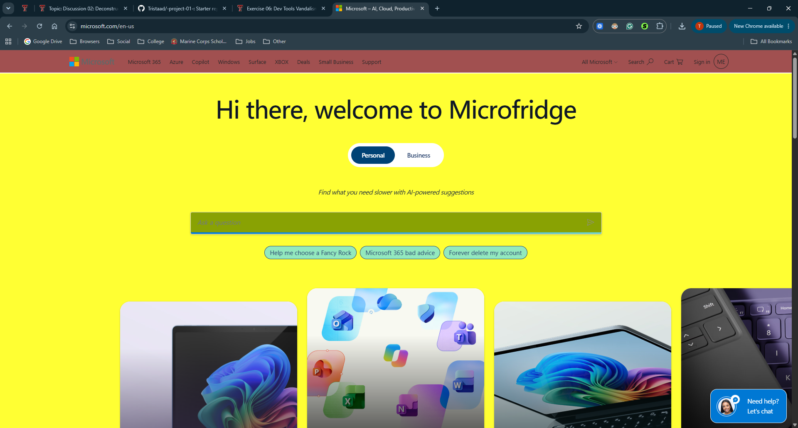

My Dev Tools Vandalism
I used browser developer tools to temporarily "vandalize" a website. Below is a screenshot showing my changes. These edits only appeared on my computer and did not affect the actual website.

I "Vandalized" Microsoft's Homepage
I made quite a few changes to the Microsoft website homepage. These changes are as follows:
- Changed "Hi there, welcome to Microsoft" to "Hi there, welcome to Microfridge"
- Changed "Find what you need faster with AI-powered suggestions" to "Find what you need slower with AI-powered suggestions"
- Changed "Help me choose a PC" to "Help me choose a Fancy Rock"
- Changed "Microsoft 365 tips" to "Microsoft 365 bad advice"
- Changed "Sign in to my account" to "Forever delete my account"
- Changed background color of "Help me choose a PC", "Microsoft 365 tips", and "Sign in to my account" buttons to seafoam green, aka #93E9BE
- Changed background color of "Ask a question" search box to vomit green, aka #89A203
- Changed background color of entire site to highlighter yellow, aka #FFFF33
- Changed color of header bar to a random red that "compliments" everything else
- The text edits were amusing as they almost all completely counteracted the original meaning, thought the Microfridge change was actually based on the old joke where the Xbox Series X looked like a mini-fridge. The color edits were fun simply because they looked absolutely horrible.
- A few changes were more challenging to get stick because my dark mode extension had made it's own changes to the css, and even after turning it off the code remained, and I did not want to refresh the page as I had already done all the text. Then there was the fact that every time I moved my cursor over the seafoam green buttons, they'd reset back to their original color. The background itself was almost not changed at all until I realized the reason none of my changes were even showing up was because they were using an image for the background, which I promptly deleted. I had also changed the personal button to be vomit green and say "personal", but when I maximized my browser, those changes disappeared, so I chose to leave that one alone.
- Frankly, as much as I enjoy playing on my Xbox, and utilizing my Microsoft account, Microsoft can be quite annoying and make horrible decisions from time to time. I decided I wanted to portray some of that here, while also making it look as ugly as possible.
- I understood HTML and CSS well enough to make the changes I wanted, though sometimes it was quite a pain as they had a LOT of pre-existing styles that were overriding my changes.
- I understand how well dev tools can be used when crafting my own website, and how much can actually go into it.